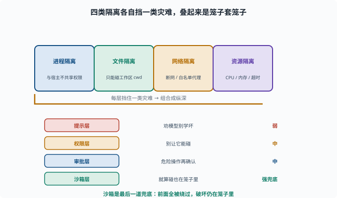

沙箱与隔离：把 Agent 关进"笼子"
目标：理解沙箱如何隔离进程、文件、网络，把破坏范围限制在可控内。读完这一页，你能说清沙箱的几类隔离维度、它们的意义，以及为什么沙箱是"纵深防御"的一部分。
沙箱是什么
**沙箱（sandbox）**是一个受限的运行环境，让 Agent（或它的工具/命令）在"被关起来的笼子"里执行，即便它做了危险操作，也不会波及其它系统。
破坏被限制在沙箱内 → 影响可控
=
Agent 可以'说想做危险事'，但只能在隔离区里做
四类隔离维度
进程隔离：agent 子进程与宿主进程隔离（不共享权限/环境）
文件隔离：只能读写指定的根目录（工作区），碰不到其它文件
网络隔离：限制/隔离网络访问（甚至完全断网）
资源隔离：限制 CPU/内存/超时，防跑飞
任何一类都能挡一类灾难。组合起来就是"笼子套笼子"。
下面这张图把四类隔离和"纵深防御"叠在一起看：横排是四类隔离各自挡住一类灾难，竖排是提示、权限、审批、沙箱四层防线的强弱关系。

注意图中沙箱被标成"强兜底"：提示只能"劝"、权限能"限制"、审批能"确认"，但三者都依赖模型或用户的配合；沙箱是唯一即使前面全部失守、破坏仍被物理关住的一层。这也是为什么它被称为最后一层。
文件隔离：最常用也最关键
普通开发场景，最担心的往往是"Agent 乱写/乱删文件"。文件隔离的常见做法：
给 Agent 一个受限的工作目录（cwd）
所有文件操作都限制在该目录
工作区之外一律拒绝（除非显式批准）
deepseek-harness 里 fs 能力的 cwd/作用域就承担这个（09-06）。
网络隔离：阻断"不必要的外部"
对不需要网络的 Agent，断网是最简单有效的隔离：
不需要网络 → 断网（最干净）
需要某些网址 → 白名单代理，限制可访问域
网络是数据泄露的高危通道（11-05），能关则关。
沙箱是"纵深防御"的一层
沙箱不是唯一防线，而是最后一道兜底：
提示层：别让模型学坏（弱）
权限层：别让它能碰（中）
沙箱层：就算碰，也只在笼子里（强兜底）
审批层：危险操作再确认（中）
即使前面全被绕过，沙箱仍把破坏限制住。纵深防御让单点失误不至于全盘皆输。
一个沙箱效果的思维实验
假设 Agent"决定"执行 rm -rf /：
无沙箱：灾难
有文件隔离：命令只能删工作区的文件
有审批：执行前被拦下
有网络隔离：即便想外传数据，也没法连出去
每一层都挡住一种灾难。
deepseek-harness 的真实沙箱：Landlock
这个仓库在 Linux 上用内核级文件沙箱：native/landlock-run（@deepseek-ai/node-addon-landlock-run）。它基于 Linux 的 Landlock 特性——一个由内核强制执行的"非特权进程自我限制"机制（内核 5.13+ 内建，不需要 root）。实现思路叫self-restrict-then-exec（先自我限制、再执行）：
landlock-run 进程启动 → 给自己装上"文件系统白名单"规则
→ exec 要跑的命令（bash 等）
→ 规则随 exec 继承：命令和它派生的一切子进程都被关在白名单里
→ 而"发起者"（agent 宿主进程）自己不受限
两个值得记住的设计细节：
fail-closed（失败即关闭）：若内核无法强制执行，宁可退出也不跑命令
最小 API 面：launcherPath() + probe() + grantArgs() 三个函数
fail-closed 与本页的精神一致：沙箱的价值在"确定性"，"内核不支持但放行执行"会把强兜底退化成弱承诺。probe() 返回 full/partial/unusable 三档，让调用方能区分"完全强制/部分强制/不可用"再决定怎么降级——这也是 11-08 "门禁思路"在沙箱上的翻版。
思考题
- 沙箱隔离的四个维度是什么？
- 文件隔离最常见的做法是什么？
- 为什么"不需要网络就断网"很有效？
- 为什么说沙箱是"纵深防御"的一层？
- 用
rm -rf /的例子说明沙箱如何避免灾难。
参考答案
- 进程隔离、文件隔离、网络隔离、资源隔离（CPU/内存/超时）。
- 给 Agent 一个受限工作目录（cwd），把所有文件操作限制在该目录，工作区之外拒绝（除非显式批准）。
- 因为网络是数据泄露的高危通道，断网最彻底地阻断"想外传也没法连"；只需白名单时再用代理限制可访问域。
- 因为它是最后一道兜底：即使提示/权限/审批被绕过，破坏仍被关在隔离区内，让单点失误不至于全盘崩溃。
- 无沙箱会灾难；有文件隔离则命令只能删工作区文件，有审批则执行前被拦，有网络隔离则即便想外传也没法连出去——多层层层挡住。
下一步
- 想理解恶意输入如何骗 Agent → 11-03 提示注入。
- 想看工具层怎么兜底 → 11-04 工具安全。
- 想复习作用域/权限 → 09-06 作用域与权限。